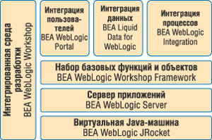
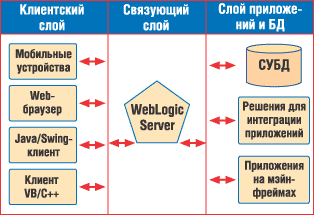

Андрей Колесов
Одна из главных черт развития ИТ-рынка в последнее десятилетие - формирование в качестве самостоятельного направления сегмента инфраструктурного ПО для создания масштабируемых распределенных корпоративных информационных систем. Довольно часто такое ПО называют еще программным обеспечением промежуточного уровня (middleware), подчеркивая его функции связующего звена между операционными системами и прикладными решениями. Вполне очевидно, что именно на эту категорию продуктов ложится существенная нагрузка, связанная с интеграцией данных и приложений.
Один из наиболее ярких игроков на этом рынке - компания BEA Systems* (http://www.bea.com), которая образована относительно недавно, в 1995 г., но при этом в последние годы входит в число крупнейших мировых разработчиков ПО и занимает лидирующие позиции в сегменте middleware. Штаб-квартира компании находится в Сан-Хосе (шт. Калифорния, США), а 77 ее региональных офисов расположены в 37 странах мира. Продукцию BEA используют более 15 тыс. заказчиков (включая 100% компаний из списка Global Fortune 500) и свыше 1600 партнеров по всему миру.
* Компания получила свое название по начальным буквам имен трех ее основателей (Bill Coleman, Ed Scott, Alfred Chuang). Один из них, Альфред Чуанг, уже много лет остается ее президентом и исполнительным директором.
BEA Systems успешно преодолела испытание экономическим кризисом последних лет, демонстрируя устойчивое развитие своего бизнеса. Объем продаж ее продуктов в последнем финансовом году, закончившемся 31 января 2005 г., составил 1,08 млрд долл., чистая прибыль - 131 млн долл., что означает рост соответственно на 8 и 12% по сравнению с предыдущим годом. В июне 2004 г. компания открыла свое представительство в Москве.
В сегменте рынка инфраструктурного ПО BEA конкурирует с такими гигантами, как IBM, Microsoft, Oracle, SAP. По мнению аналитиков Gartner, именно эта компания выступает технологическим лидером в области интеграции приложений, опережая своих именитых соперников, что во многом объясняется именно ее узкой специализацией в сфере ПО промежуточного слоя - BEA не занимается созданием ОС, СУБД, бизнес-приложений и т. д. При этом, делая ставку на использование Java-технологий, BEA активно участвует в развитии и применении передовых стандартов ИТ-отрасли.
Однако, характеризуя BEA как одного из мировых лидеров рынка корпоративного ПО, следует признать, что в России ее технологии применяются пока не слишком широко, хотя уже сейчас можно назвать целый ряд успешных проектов, в основном в телекоммуникационной и банковской сферах. Московский офис компании в течение последнего года активно занимался формированием полноценной партнерской сети**.
** Заметим, что хотя бизнес-модель BEA подразумевает работу с клиентами через партнеров, в структуре доходов компании продажи лицензий составляют 52%, а остальные деньги приносят услуги, предоставляемые заказчикам (12% - консалтинг и обучение, 36% - техническая поддержка пользователей).
Учитывая специфику продуктов BEA - ПО промежуточного слоя, - становится понятно, что особая роль в их продвижении отводится компаниям, занимающимся как заказными проектами, так и тиражируемыми решениями (кстати, по своей сути технологии BEA нацелены на применение их для решения интеграционных задач силами ИТ-подразделений заказчиков). Положительную роль в распространении продуктов BEA играет то, что многие российские офшорные софтверные фирмы применяют BEA WebLogic при выполнении заказов западных клиентов и могут использовать свой опыт при реализации проектов внутри страны.
Следуя сложившейся среди мировых ИТ-поставщиков маркетинговой традиции, компания BEA также выбрала броское название для своей технологической стратегии - Liquid Computing (на русский язык она перевела это как "Простые вычислительные системы"). Чем же данная стратегия отличается от уже известных на нашем рынке моделей вычислений адаптивных или по требованию? Представители компании формулируют ответ примерно так: все эти модели подразумевают, что заказчик может сам выбирать набор функций и мощностей, которые ему нужны для решения его задач. Но другие поставщики предлагают выбор только из числа своих продуктов, а BEA открывает возможность доступа к любым решениям любых производителей.
Инфраструктурная платформа BEA WebLogic
В основе технологий BEA Systems лежит интегрированная программная платформа BEA WebLogic Platform, представляющая собой полный набор средств разработки, внедрения, интеграции и управления приложениями масштаба предприятия и Web-сервисами (рис. 1). По состоянию на апрель 2005 г. она представлена версией 8.1, но компания уже готовит к выпуску следующий пакет - в конце 2004 г. она представила бета-версию нового варианта ключевого компонента платформы - BEA WebLogic Server 9.0, известного ранее под кодовым названием Diablo. При этом BEA поддерживает и предыдущие версии платформы, в том числе 6.x и 7.x.
|  | Рис. 1. Архитектура платформы BEA WebLogic Enterprise.
|
Построенная на основе открытых отраслевых стандартов, платформа BEA позволяет решать задачи интеграции как на уровне ИТ-инфраструктуры, так и применительно к бизнес-задачам предприятия, предоставляя в числе прочего компоненты для интеграции людей, процессов, данных и приложений. Этот комплекс ПО имеет слоистую структуру и состоит из ряда программных решений, которые распространяются также как автономные продукты.
BEA WebLogic Server - ядро платформы, высокопроизводительный масштабируемый сервер (рис. 2), созданный на основе Java 2 Platform Enterprise Edition (J2EE) и обеспечивающий работу корпоративных приложений, в том числе построенных на принципах SOA (Service Oriented Architecture). Он может работать в среде различных ОС (Microsoft Windows, IBM AIX, Sun Solaris, Linux) и на разных аппаратных платформах (Pentium, Itanium, SPARC, PowerPC и т. д.). При этом нужно отметить давнишнее глобальное партнерство BEA с корпорацией HP: имеются отдельные версии WebLogic Server для различных ее ОС (HP-UX, OpenVMS, Tru64 UNIX и NonStop) и аппаратных средств (PA-RISC, Alpha, MIPS). Вместе с тем в последние годы BEA делает основной акцент на поддержку архитектуры корпорации Intel, с которой также активно сотрудничает.
|  | Рис. 2. Трехуровневая архитектура BEA WebLogic Server.
|
BEA WebLogic JRockit - виртуальная Java-машина (JVM), оптимизированная для аппаратной платформы Intel. Технологический компонент сервера приложений; поставляется в его составе. Для разработчиков ПО предлагается также набор BEA JRockit 5.0 Java Development Kit, позволяющий ускорить процедуры развертывания создаваемых решений и повысить их производительность.
BEA WebLogic Workshop - интегрированное средство Java-разработки для создания программных решений масштаба предприятия, в том числе Web-приложений, Web-сервисов, JSP, EJB и т. д. В состав данного инструмента входит один из самых эффективных в отрасли Java-компиляторов. В последнее время компания BEA расширяет сотрудничество с Eclipse Foundation в сфере разработки универсальной среды Java-программирования и использования ее в собственных продуктах.
BEA WebLogic Workshop Framework - мощный набор библиотек функций и объектов для разработки и интеграции приложений. Технологический компонент, входящий в состав BEA WebLogic Workshop и платформы в целом.
BEA WebLogic Portal - инфраструктура для разработки широкого круга портальных приложений. В BEA Portal Solution Catalog входит большой набор продуктов и решений третьих фирм, реализованных на этой технологической базе.
BEA WebLogic Integration - ключевой компонент платформы, обеспечивающий ее интеграцию с внешними бизнес-процессами, различными информационными ресурсами и сервисами. В нем используется обширный набор адаптеров для связи с внешними программными платформами (в том числе NET и CORBA), бизнес-приложениями (SAP, Oracle, PeopleSoft, Baan и т. д.) и источниками данных в специфических форматах (например, SWIFT). Тесно взаимосвязан с WebLogic Workshop, предоставляя для этой среды набор визуальных инструментов проектирования интеграционных решений (см. таблицу).
BEA Liquid Data for WebLogic - относительно новый модуль платформы (появился только в версии 8.1). Это ключевой элемент реализации концепции SOA, позволяющий просматривать информацию и работать с ней через единый многофункциональный глобальный ресурс. Используя средства Using its Enterprise Data Services Layer, можно предоставить доступ к многочисленным гетерогенным источникам информации через простой интерфейс всем бизнес-пользователям одновременно.
BEA WebLogic Workshop поставляется в нескольких вариантах, в том числе в бесплатном Free Edition - для ознакомления и для создания некоммерческих решений. Полный вариант, Professional Edition, включает помимо собственно программных инструментов техническую поддержку разработчиков и лицензию на распространение коммерческих продуктов. Для независимых разработчиков (ISV) предназначено специальное издание WebLogic Platform ISV Edition. Это полный вариант основного пакета (но без BEA Liquid Data for WebLogic) по цене почти в пять раз ниже. Но право на его покупку могут получить лишь компании, создающие собственные приложения на базе платформы BEA, - ISV Edition предназначен для перепродажи заказчикам, но только в качестве дополнения к продуктам этих фирм-разработчиков.
Помимо WebLogic Platform, компания BEA предлагает еще ряд решений, которые расширяют возможности построения сложных корпоративных систем. Среди них стоит отметить следующие продукты.
BEA WebLogic Enterprise Security - это надежная основа для обеспечения безопасности корпоративных приложений. С помощью этого продукта организации могут применять такие сервисы, как аутентификация и авторизация, в распределенных гетерогенных информационных системах.
MobileAware Interaction Server - дополнение к BEA WebLogic Platform, предоставляющее презентационный слой, с помощью которого пользователи могут получить доступ к нужной информации с мобильных устройств.
BEA Tuxedo - платформа для поддержки распределенной транзакционной обработки данных и разработки решений на базе обмена сообщениями, в том числе с использованием многоязыковых инструментов (C, C++, Cobol). Взаимодействие с сервером приложений WebLogic выполняется через BEA WebLogic Tuxedo Connector.
Основные возможности BEA WebLogic Integration
| Функции | Описание |
| Управление бизнес-процессами | Позволяет моделировать сценарии бизнес-процессов и управлять интеграцией и автоматизацией в терминах бизнес-задач |
| Преобразование данных (Data Transformation) | Преобразует данные из одного формата в другой с использованием простых визуальных карт соответствия. Позволяет обрабатывать входную и выходную информацию (в любых комбинациях XML, не-XML и Java-данных), выполнять преобразования по ходу потоковых процессов, взаимодействовать с большим числом источников, проводить сложные операции (объединение, ветвление, группирование и т. д.) |
| Брокер сообщений | Предоставляет основанную на правилах маршрутизацию сообщений с применением методов подписки в слабосвязанном режиме работы. Обеспечивает высокую производительность с низким уровнем задержек обмена сообщениями между приложениями |
| Элементы управления BEA WebLogic Integration | Дают возможность даже не очень опытным пользователям быстро решать задачи интеграции с помощью простых визуальных интерфейсов. Более десятка встроенных элементов управления обеспечивают простой доступ к базам данных, файлам, HTTP, папкам сообщений, сервис-брокерам, а также к результатам действий людей |
| Система рабочих списков (Worklist System), интеграция бизнес-пользователей | Функциональность, позволяющая постановщикам задач, исполнителям и администраторам взаимодействовать с бизнес-процессами с помощью операций исключения, утверждения, отслеживания статуса и т. д. Включает централизованное управление отдельными пользователями и группами сотрудников, пользовательские правила, авторизацию для безопасного участия в процессах |
| Интеграция торговых партнеров | Обеспечивает быстрое безопасное общение между поставщиками и потребителями через стандартные протоколы, такие, как RosettaNet и ebXML, с использованием защищенных сообщений, цифровой подписи и шифрования, восстанавливаемых и отслеживаемых сообщений, а также динамичных обновлений конфигураций. Включает широкий спектр вариантов взаимодействия - от Hub-Hub и легкого партнерского клиента (BEA WebLogic Integration - Business Connect) до простейшего доступа через портал, браузер или FTP. Управление партнерскими профилями выполняется через импорт-экспорт конфигураций |
| Интеграция приложений и адаптеры | Интеграция приложений предоставляет доступ от элементов управления BEA WebLogic Workshop к Application Integration Design Console, Application Views, встроенным адаптерам BEA WebLogic и адаптерам, созданным заказчиками |
| Администрирование и управление | Консоль администрирования обеспечивает интеграционное управление бизнес-процессами, установленными приложениями, трафиком брокера сообщений, использованием адаптеров, взаимодействием торговых партнеров и рабочими списками, предоставляя администраторам полную картину происходящего в распределенной интеграционной среде |
Выход на телекоммуникационный рынок
В начале 2005 г. BEA Systems объявила о намерении более серьезно заняться освоением рынка телекоммуникаций. Крупнейшие компании этого сегмента (в частности, все 50 фирм из сферы телекома, входящие в список Global 500) уже используют BEA WebLogic в своих системах поддержки операций (Operating Support Systems, OSS). Теперь BEA собирается предоставлять более специализированные продукты, причем для более широкого круга клиентов. Все эти задачи были сформулированы в анонсированной 7 февраля 2005 г. стратегической концепции Global Telecommunications Initiative, цель которой определена следующим образом - преодоление барьеров между компьютерными и телекоммуникационными сетями, обеспечение конвергенции телеком- и ИТ-рынков.
Технологическая реализация этой заманчивой идеи предполагает создание еще одного семейства продуктов - BEA WebLogic Communications Platform (проект, ранее известный под кодовым названием Da Vinci). С его помощью телекоммуникационные компании и операторы связи смогут производить и распространять цифровой контент и видеосервисы через беспроводные и традиционные сети, реализуя, в числе прочего, следующие возможности:
- интерактивные опросы в режиме реального времени;
- голосование по телефону (click-to-call);
- унифицированный обмен сообщениями;
- поддержка мультимедийных конференций в реальном времени;
- проведение многопользовательских игр (с поддержкой голоса).
Как реальный шаг в рамках данной инициативы BEA тогда же представила первый продукт новой платформы - BEA WebLogic SIP Server. Этот J2EE-сервер приложений дает телекоммуникационным компаниям возможность создавать, развертывать и управлять сервисами нового поколения в SIP-среде (Session Initiation Protocol), реализуя, в частности, передачу голоса и данных через различные сети, соединения и оконечные устройства. WebLogic SIP Server - это также ключевой компонент BEA WebLogic Service Delivery Solution, комплекса специализированных библиотек для разработки новых сервисов OSS.
Второй шаг BEA сделала 25 апреля, выпустив BEA WebLogic Network Gatekeeper - средство для автоматизации управления взаимоотношениями с партнерами, создания гибких биллинговых решений, защиты сетей на основе политик, а также управления доступом к приложениям и сервисам. Это ПО основано на индустриальных стандартах телеком- и ИТ-отраслей и позволяет широко применять технологию Web Services в телекоммуникационном бизнесе, решая при этом задачу управления качеством услуг (Quality of Service, QoS). BEA WebLogic Network Gatekeeper может служить единой точкой предоставления таких сетевых сервисов, как оплата получаемого контента, определение местоположения мобильного терминала, доставка SMS и MMS. Ключевое значение этого продукта для реализации коммуникационной платформы BEA связано с тем, что он дает сетевым провайдерам возможность лучше контролировать свою инфраструктуру, одновременно помогая третьим фирмам создавать собственные услуги.
В сотрудничестве с партнерами
Занимаясь сугубо инфраструктурными технологиями, BEA Systems обеспечивает себе очень удобную позицию в сотрудничестве с различными поставщиками прикладных решений. Хороший пример из этой области дает взаимодействие с компанией ProActivity (http://www.proactivityinc.com), специализирующейся на задачах управления бизнес-процессами. Особой популярностью на рынке пользуются ее инструменты ProActivity Process Analysis (поддержка совместной работы бизнес-аналитиков и программистов, нацеленной на моделирование и внедрение процессов) и ProActivity Process Business Activity Monitoring (текущий мониторинг бизнес-процессов). Нынешней весной BEA выпустила новые продукты, основанные на интеграции платформы WebLogic со средствами ProActivity, - это ProActivity Process Analysis BEA WebLogic Edition и ProActivity Process Business Activity Monitoring BEA WebLogic Edition.
BEA WebLogic Server 9.0, он же DiabloВ конце 2004 г. BEA Systems представила бета-версию нового варианта BEA WebLogic Server 9.0, ранее известного под кодовым названием Diablo. Данное решение, с существенно модернизированным функционалом - ключевой компонент всего будущего семейства BEA WebLogic Platform 9.0, предназначенного для объединения различных вычислительных систем при решении широкого класса корпоративных бизнес-задач с использованием архитектуры SOA. Diablo полностью соответствует спецификациям J2EE 1.4 и поддерживает последние отраслевые стандарты, такие, как Enterprise Web Services 1.1, JMS 1.1, JMX 1.2, JDBC 3.0, Connector Architecture 1.5, EJB 2.1 и т. п., помогая разработчикам создавать переносимые между различными платформами и интероперабельные приложения. Сервер включает возможности кросс-доменных коммуникаций, двунаправленных транзакций через механизм Enterprise Information Systems. Он предоставляет функциональность обмена сообщениями - одну из наиболее критичных на сегодня составляющих SOA-инфраструктуры - как встроенный элемент унифицированной платформы. Применение стандарта гарантированной доставки WS-ReliableMessaging обеспечивает совместимость разных систем. В целом используемые механизмы обмена сообщениями позволяют передавать тысячи сообщений в секунду - для достижения такой производительности заказчикам сегодня чаще всего приходится использовать специализированные продукты. С помощью новой консоли администрирования и команд, реализованных на скриптовом языке, системные администраторы могут гибко и эффективно управлять операциями. Консоль можно настраивать для обслуживания различных ролей пользователей. В состав Diablo также входит расширенная диагностическая среда, обеспечивающая решение возникающих проблем в реальном времени, в том числе в автоматическом режиме. Она может работать в режиме взаимодействия с инструментами третьих фирм. |